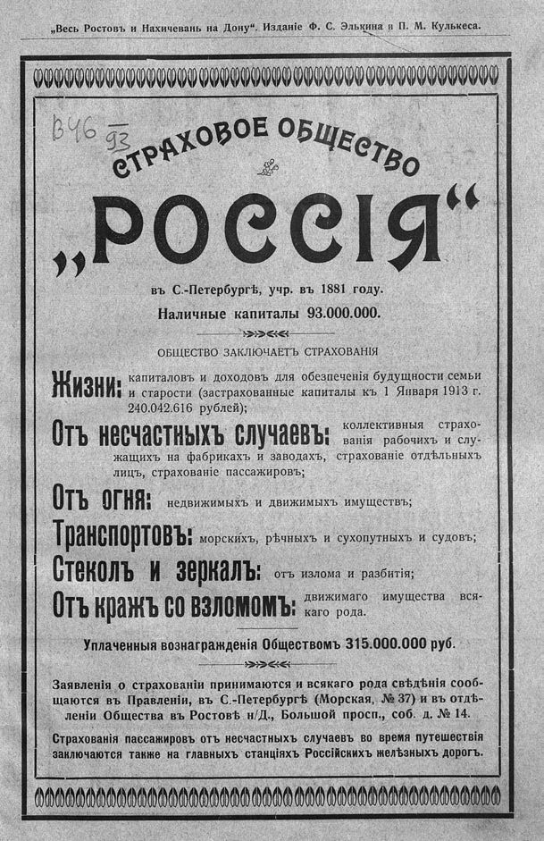

Лист источника 3
Скан

Распознанный текст
„Весь Ростовъ и Нахичевань на Дону“. Изданіе Ф. С. Элькина и П. М. Кулькеса.
СТРАХОВОЕ ОБЩЕСТВО
„РОССІЯ“
въ С.-Петербургѣ, учр. въ 1881 году.
Наличные капиталы 93.000.000.
ОБЩЕСТВО ЗАКЛЮЧАЕТЪ СТРАХОВАНІЯ
Жизни: капиталовъ и доходовъ для обезпеченія будущности семьи
и старости (застрахованные капиталы къ 1 Января 1913 г.
240.042.616 рублей);
Отъ несчастныхъ случаевъ: коллективныя страхо-
ванія рабочихъ и слу-
жащихъ на фабрикахъ и заводахъ, страхованіе отдѣльныхъ
лицъ, страхованіе пассажировъ;
Отъ огня: недвижимыхъ и движимыхъ имуществъ;
Транспортовъ: морскихъ, рѣчныхъ и сухопутныхъ и судовъ;
Стеколъ и зеркалъ: отъ излома и разбитія;
Отъ кражъ со взломомъ: движимаго имущества вся-
каго рода.
Уплаченныя вознагражденія Обществомъ 315.000.000 руб.
Заявленія о страхованіи принимаются и всякаго рода свѣдѣнія сооб-
щаются въ Правленіи, въ С.-Петербургѣ (Морская, № 37) и въ отдѣ-
леніи Общества въ Ростовѣ н/Д., Большой просп., соб. д. № 14.
Страхованія пассажировъ отъ несчастныхъ случаевъ во время путешествія
заключаются также на главныхъ станціяхъ Россійскихъ желѣзныхъ дорогъ.